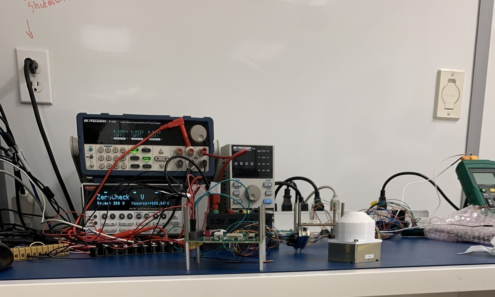
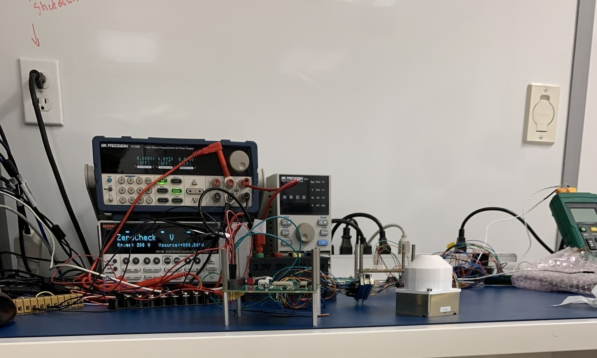

About the Project
In the ESSENCE project, I conducted thorough testing on over ten cube satellite boards, ensuring grounding and continuity across pins, significantly boosting satellite reliability. This involved detailed assessments and adjustments to ensure optimal performance under operational conditions.
In selecting materials for the satellite's outer shell, I applied my knowledge of materials science and mechanics. This choice was crucial for enduring the stresses of a rocket launch and the extreme temperature fluctuations experienced in space, ensuring the satellite's structural integrity.
For the satellite's outer frame, I employed sheet metal design strategies in Fusion 360, focusing on protecting the primary internal components from the severe conditions of space. This design phase was critical for ensuring the satellite's durability and function in orbit.
I also participated in a collaborative effort to design wire harnesses and board racks for cube satellites. This project required the use of CAD software and a thorough application of GD&T principles, ensuring precision and functionality in the satellite's internal layout.
Ensuring precision in CNC machined parts was another critical aspect of my work, maintaining tolerances within a tight +/- 0.005’’ margin. This precision machining was vital for the satellite's components to fit and function correctly, with manual adjustments made as necessary.
Finally, I crafted and led a detailed presentation on the cube satellite development progress, presented to York University and the Canadian Space Agency. This presentation, created with PowerPoint and Excel, highlighted our team's achievements and outlined future development plans, showcasing the project's potential impact and progress.
Skill Acquired:
Electrical Testing, Component Inspection, Precision Design and Manufacturing, CAD/CNC Proficiency
 

Copyright © Muhammad.